About This Website
v

Home
About
Join Titancraft
Staff
Rules & FAQ
Client Mods
The Above
© Made with
, GrimBirb
© Icons owned by TangoTek
Navigate Website
Home Page
About Us
Join Titancraft
Meet The Staff
Rules & FAQ
Client Mods
The Above
About This Website
Change Logs
v
© Made with
, GrimBirb
© Icons owned by TangoTek
 ,
GrimBirb
,
GrimBirb